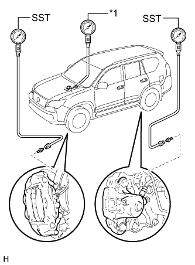

HYDRAULIC BRAKE BOOSTER > ON-VEHICLE INSPECTION |
| 1. INSPECT BRAKE MASTER CYLINDER FLUID PRESSURE CHANGE |
|  |
Inspect the battery voltage.
Turn the engine switch off and depress the brake pedal more than 20 times.
Install the LSPV gauge (SST) and brake pedal effort gauge, and then bleed air from the LSPV gauge (SST).
| *1 | Brake Pedal Effort Gauge |
When the booster does not operate:
Depress the brake pedal and check the fluid pressure.
| Front Brake Pressure | Rear Brake Pressure |
| 2170 kPa (22.1 kgf/cm2, 315 psi) or more | 0 kPa (0 kgf/cm2, 0 psi) |
| Front Brake Pressure | Rear Brake Pressure |
| 3130 kPa (32.0 kgf/cm2, 454 psi) or more | 0 kPa (0 kgf/cm2, 0 psi) |
When the booster operates:
Depress the brake pedal and check the fluid pressure.
Turn the engine switch on (IG) and wait until the pump motor has stopped.
Depress the brake pedal and check the fluid pressure.
| Front Brake Pressure | Rear Brake Pressure |
| 1410 to 2610 kPa (14.4 to 26.6 kgf/cm2, 205 to 379 psi) | 1620 to 2820 kPa (16.5 to 28.8 kgf/cm2, 235 to 409 psi) |
| Front Brake Pressure | Rear Brake Pressure |
| 3910 to 5110 kPa (39.9 to 52.1 kgf/cm2, 567 to 741 psi) | 4220 to 5420 kPa (43.0 to 55.3 kgf/cm2, 612 to 786 psi) |
| Front Brake Pressure | Rear Brake Pressure |
| 6410 to 7610 kPa (65.4 to 77.6 kgf/cm2, 930 to 1104 psi) | 6810 to 8010 kPa (69.4 to 81.7 kgf/cm2, 988 to 1162 psi) |
| Front Brake Pressure | Rear Brake Pressure |
| 8900 to 10100 kPa (90.8 to 103.0 kgf/cm2, 1291 to 1465 psi) | 9410 to 10610 kPa (96.0 to 108.2 kgf/cm2, 1365 to 1539 psi) |
| 2. INSPECT BRAKE MASTER CYLINDER OPERATION |
Inspect the battery voltage.
Turn the engine switch off and depress the brake pedal more than 20 times.
Check that the brake pedal reaction force decreases.
If the pedal reaction force does not decrease, check the brake line and brake master cylinder and replace parts as necessary.
Turn the engine switch on (IG) and check the pump motor operation noise. If the pump motor does not operate, check the wire harness and brake booster pump assembly and replace parts as necessary (Click here).
Connect the intelligent tester to the DLC3.
Turn the engine switch on (IG).
Turn the intelligent tester on.
Enter the following menus: Chassis / ABS/VSC/TRC / Active Test.
Jack up and support the vehicle.
Release the parking brake lever.
Move the shift lever to N and check that the rear wheels can be rotated by hand.
Inspect the front VSC solenoid (SMCF) operation.
Select "VSC/TRC Solenoid (SRCF)" on the intelligent tester.
Turn "VSC/TRC Solenoid (SRCF)" on with the intelligent tester, depress the brake pedal with a stable force and check that the pedal cannot be depressed.
If the pedal can be depressed, replace the brake master cylinder.
Release the brake pedal.
When the solenoid is off, depress the brake pedal again and check that the brake pedal can be depressed.
If the pedal cannot be depressed, replace the brake master cylinder.
Inspect the front VSC solenoid (SREA) operation.
Select "VSC/TRC Solenoid (SRCR)" and "VSC/TRC Solenoid (SRCF)" on the intelligent tester.
Turn "VSC/TRC Solenoid (SRCR)" and "VSC/TRC Solenoid (SRCF)" on simultaneously with the intelligent tester, and then depress the brake pedal with a stable force.
When the solenoids are on, check that the front wheels cannot be rotated by hand.
If the front wheels can be rotated, replace the brake master cylinder.
When the solenoids are off, turn "VSC/TRC Solenoid (SRCF)" on again, and then depress the brake pedal. Check the front wheels by rotating them by hand.
If the front wheels cannot be rotated, replace the brake master cylinder.
When "VSC/TRC Solenoid (SRCF)" is off, depress the brake pedal again and check that the brake pedal can be depressed.
If the pedal cannot be depressed, replace the brake master cylinder.
Inspect the front ABS solenoid (SFRH) operation.
Select "ABS Solenoid (SFRH)" on the intelligent tester.
Turn "ABS Solenoid (SFRH)" on with the intelligent tester, and then depress the brake pedal with a stable force.
When the solenoid is on, check the right front wheel by rotating it by hand.
If the right front wheel cannot be rotated, replace the brake master cylinder.
When the solenoid is off, depress the brake pedal again and check that the right front wheel cannot be rotated by hand.
If the right front wheel can be rotated, replace the brake master cylinder.
Inspect the front ABS solenoid (SFLH) operation.
Select "ABS Solenoid (SFLH)" on the intelligent tester.
Turn "ABS Solenoid (SFLH)" on with the intelligent tester, and then depress the brake pedal with a stable force.
When the solenoid is on, check the left front wheel by rotating it by hand.
If the left front wheel cannot be rotated, replace the brake master cylinder.
When the solenoid is off, depress the brake pedal again and check that the left front wheel cannot be rotated by hand.
If the left front wheel can be rotated, replace the brake master cylinder.
Inspect the front ABS solenoid (SFRR) operation.
Select "ABS Solenoid (SFRR)" and "ABS Solenoid (SFRH)" on the intelligent tester.
Depress the brake pedal with a stable force, and then turn "ABS Solenoid (SFRR)" and "ABS Solenoid (SFRH)" on simultaneously with the intelligent tester.
When the solenoids are on, check the right front wheel by rotating it by hand.
If the right front wheel cannot be rotated, replace the brake master cylinder.
When the solenoids are off, depress the brake pedal again and check that the right front wheel cannot be rotated by hand.
If the right front wheel can be rotated, replace the brake master cylinder.
Inspect the front ABS solenoid (SFLR) operation.
Select "ABS Solenoid (SFLR)" and "ABS Solenoid (SFLH)" on the intelligent tester.
Depress the brake pedal with a stable force, and then turn "ABS Solenoid (SFLR)" and "ABS Solenoid (SFLH)" on simultaneously with the intelligent tester.
When the solenoids are on, check the left front wheel by rotating it by hand.
If the left front wheel cannot be rotated, replace the brake master cylinder.
When the solenoids are off, depress the brake pedal again and check that the left front wheel cannot be rotated by hand.
If the left front wheel can be rotated, replace the brake master cylinder.
Inspect the rear VSC solenoid (SREC) operation.
Select "VSC/TRC Solenoid (SRMF)" on the intelligent tester.
Depress the brake pedal with a stable force, and then turn "VSC/TRC Solenoid (SRMF)" on with the intelligent tester.
Release the brake pedal when the solenoid is on, and check that the rear wheels cannot be rotated by hand.
If the rear wheels can be rotated, replace the brake master cylinder.
When the solenoid is off, check the rear wheels by rotating them by hand.
If the rear wheels cannot be rotated, replace the brake master cylinder.
Inspect the rear VSC solenoid (STR) operation.
Select "VSC/TRC Solenoid (SRMR)" and "VSC/TRC Solenoid (SRMF)" on the intelligent tester.
Turn "VSC/TRC Solenoid (SRMR)" and "VSC/TRC Solenoid (SRMF)" on simultaneously with the intelligent tester.
When the solenoids are on, check that the rear wheels cannot be rotated by hand.
If the rear wheels can be rotated, replace the brake master cylinder.
When the solenoids are off, turn "VSC/TRC Solenoid (SRMF)" on again, and check the rear wheels by rotating them by hand.
If the rear wheels cannot be rotated, replace the brake master cylinder.
When "VSC/TRC Solenoid (SRMF)" is off, depress the brake pedal again and check that the rear wheels cannot be rotated by hand.
If the rear wheels can be rotated, replace the brake master cylinder.
Inspect the rear ABS solenoid (SRRH) operation.
Select "ABS Solenoid (SRRH)" on the intelligent tester.
Turn "ABS Solenoid (SRRH)" on with the intelligent tester, and then depress the brake pedal with a stable force.
When the solenoid is on, check the right rear wheel by rotating it by hand.
If the right rear wheel cannot be rotated, replace the brake master cylinder.
When the solenoid is off, depress the brake pedal again and check that the right rear wheel cannot be rotated by hand.
If the right rear wheel can be rotated, replace the brake master cylinder.
Inspect the rear ABS solenoid (SRLH) operation.
Select "ABS Solenoid (SRLH)" on the intelligent tester.
Turn "ABS solenoid (SRLH)" on with the intelligent tester, and then depress the brake pedal with a stable force.
When the solenoid is on, check the left rear wheel by rotating it by hand.
If the left rear wheel cannot be rotated, replace the brake master cylinder.
When the solenoid is off, depress the brake pedal again and check that the left rear wheel cannot be rotated by hand.
If the left rear wheel can be rotated, replace the brake master cylinder.
Inspect the rear ABS solenoid (SRRR) operation.
Select "ABS Solenoid (SRRR)" and "ABS Solenoid (SRRH)" on the intelligent tester.
Depress the brake pedal with a stable force, and then turn "ABS Solenoid (SRRR)" and "ABS Solenoid (SRRH)" on simultaneously with the intelligent tester.
When the solenoids are on, check the right rear wheel by rotating it by hand.
If the right rear wheel cannot be rotated, replace the brake master cylinder.
When the solenoids are off, depress the brake pedal again and check that the right rear wheel cannot be rotated by hand.
If the right rear wheel can be rotated, replace the brake master cylinder.
Inspect the rear ABS solenoid (SRLR) operation.
Select "ABS Solenoid (SRLR)" and "ABS Solenoid (SRLH)" on the intelligent tester.
Depress the brake pedal with a stable force, and then turn "ABS Solenoid (SRLR)" and "ABS Solenoid (SRLH)" on simultaneously with the intelligent tester.
When the solenoids are on, check the left rear wheel by rotating it by hand.
If the left rear wheel cannot be rotated, replace the brake master cylinder.
When the solenoids are off, depress the brake pedal again and check that the left rear wheel cannot be rotated by hand.
If the left rear wheel can be rotated, replace the brake master cylinder.
Lower the vehicle.
Disconnect the intelligent tester.
| 3. CHECK FLUID LEVEL IN RESERVOIR |
 |
Turn the engine switch off and fully depress the brake pedal 40 times or more to release the pressure in the accumulator.
Adjust the fluid level so that it is at the MAX line.